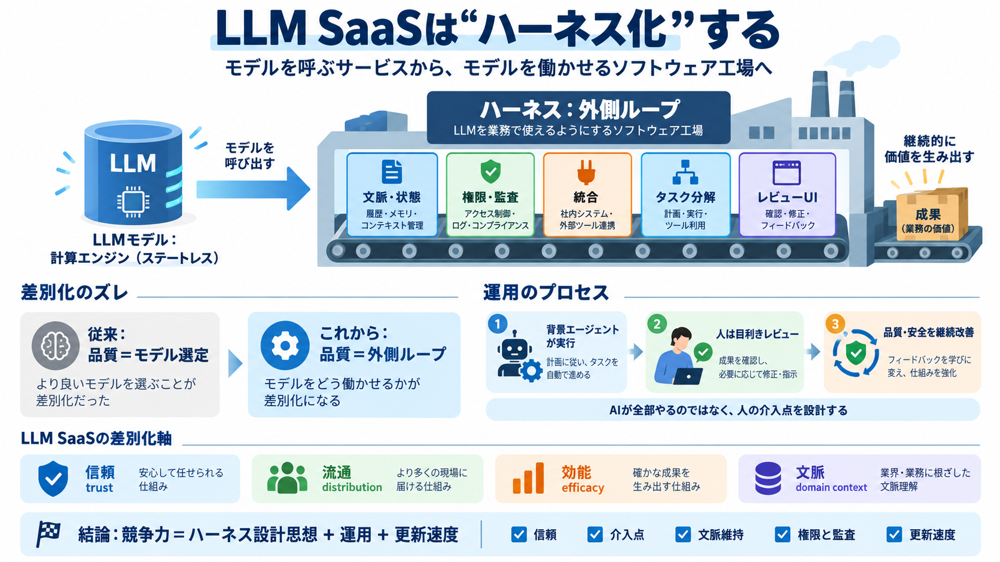

The Anatomy of an Agent Harness
Try LangSmith Get a demo Agent Architecture # The Anatomy of an Agent Harness Vivek Trivedy March 10, 2026 12 min…

Try LangSmith Get a demo Agent Architecture # The Anatomy of an Agent Harness Vivek Trivedy March 10, 2026 12 min…
NEW YORK, Oct. 30, 2025 (GLOBE NEWSWIRE) -- Ramsey Theory Group, a leading provider of applied artificial intelligence s…
Aaron Levie’s insights from Bitcoin World Disrupt 2025 paint a clear picture: the future of enterprise SaaS is not about…
Sign up Sign in Sign up Sign in Unknown user Vishal Mysore ## Vishal Mysore Holder of multiple patents in AI and s…
Subject matter experts are embedded in ChatGPT Work engineering teams. The models have become “smarter” than developers …